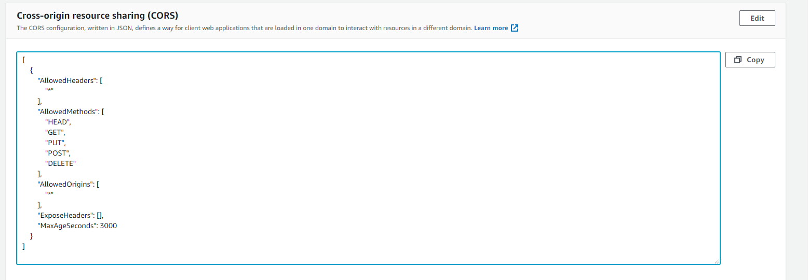
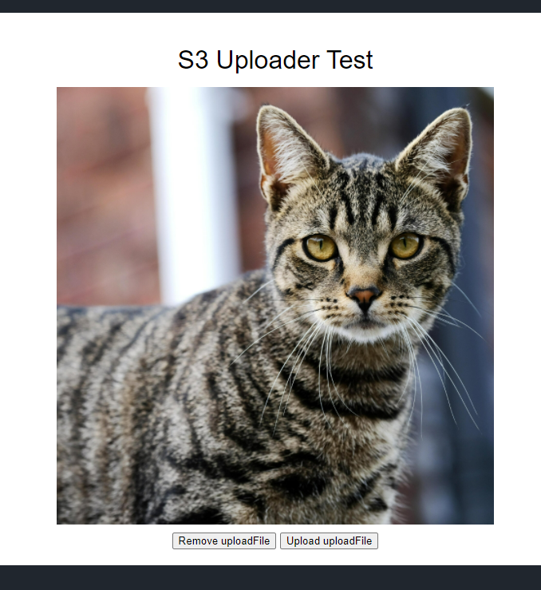

Uploading Directly to S3 from Client Using Pre-Signed URLs (JavaScript, .NET)
Introduction
The aim of this post is to demonstrate how you can upload files directly from a client (a web app in this example) to AWS S3. The advantage of doing this is that the file itself does does not pass through your web server, making your application more scalable.
Reference documentation from AWS:
Example Code
Here we've built a .NET Core, C# service for getting a presigned URL using the AWS S3 SDK.
using System;
using System.IO;
using System.Threading.Tasks;
using Amazon.S3;
using Amazon.S3.Model;
using Amazon.S3.Transfer;
using Microsoft.Extensions.Logging;
using App.Api.Common.Interfaces;
namespace App.Api.Common.Services
{
public class AwsS3Service : IAwsS3Service
{
private readonly IAwsSettings _awsS3Settings;
private readonly IEnvironmentSettings _environmentSettings;
private readonly ILogger _logger;
public AwsS3Service(IAwsSettings awsS3Settings, IEnvironmentSettings environmentSettings, ILogger logger)
{
_awsS3Settings = awsS3Settings;
_environmentSettings = environmentSettings;
_logger = logger;
}
public string GetPresignedUrl(string objectKey)
{
int presignedUrlTimeoutMinutes = 3600;
var request = new GetPreSignedUrlRequest
{
BucketName = this.ClientUploadBucket,
Key = objectKey,
Verb = HttpVerb.PUT,
Expires = DateTime.UtcNow.AddMinutes(presignedUrlTimeoutMinutes)
};
string preSignedUrl;
using (var awsAmazonS3 = new AmazonS3Client(_awsS3Settings.AccessKeyId, _awsS3Settings.SecretKey, new AmazonS3Config { RegionEndpoint = _awsS3Settings.RegionEndpoint }))
{
preSignedUrl = awsAmazonS3.GetPreSignedURL(request);
}
return preSignedUrl;
}
public string ClientUploadBucket => $"client-upload-{_environmentSettings.ShortName}";
}
}
Here's the controller code in which we generate a unique, URL friendly file name, call the service and format the response for the client. Note that in this example code, there is no authorization for the request, which you would likely want.
/// <summary>
/// Get a pre-signed URL for direct upload from the client
/// </summary>
/// <returns>Pre-signed URL, bucket and object key</returns>
[HttpGet("s3-presigned-upload-url")]
[ResponseCache(NoStore = true, Duration = 0)]
public async Task<ActionResult<object>> GetS3PresignedUploadUrlAsync(string fileName)
{
// Format the file name and add a unique prefix
string fileExtension = Path.GetExtension(fileName)?.ToLower();
string fileNameWithoutExtension = Path.GetFileNameWithoutExtension(fileName);
string urlFriendlyFileName = Regex.Replace(fileNameWithoutExtension, "[^A-Za-z0-9]", "-");
string objectKey = $"{Guid.NewGuid()}-{urlFriendlyFileName}{fileExtension}";
string presignedUrl = _awsS3Service.GetPresignedUrl(objectKey);
return new
{
presignedUrl,
bucket = _awsS3Service.ClientUploadBucket,
objectKey
};
}
Here is the HTML and JavaScript to test the upload. This has sample code has been adapted from the example code provided in the AWS documentation to work with the above controller and service code, passing the filename to the API endpoint so that this is included in the presigned URL (and the resulting file in our bucket get's the file name we want) Also, the restiction on file extension has been removed.
<html>
<head>
<title>Upload file to S3</title>
<script src="https://unpkg.com/vue"></script>
<script src="https://unpkg.com/axios@0.2.1/dist/axios.min.js"></script>
</head>
<body>
<div id="app">
<h1>S3 Uploader Test</h1>
<div v-if="!uploadFile">
<h2>Select an uploadFile</h2>
<input type="file" @change="onFileChange">
</div>
<div v-else>
<img :src="uploadFile" />
<button v-if="!uploadURL" @click="removeImage">Remove uploadFile</button>
<button v-if="!uploadURL" @click="uploadImage">Upload uploadFile</button>
</div>
<h2 v-if="uploadURL">Success! Image uploaded to bucket.</h2>
</div>
<script>
const MAX_UPLOAD_FILE_SIZE = 1000000
/* ENTER YOUR ENDPOINT HERE */
const API_ENDPOINT = 'http://localhost:5000/api/file/s3-presigned-upload-url' // e.g. https://ab1234ab123.execute-api.us-east-1.amazonaws.com/uploads
new Vue({
el: "#app",
data: {
uploadFile: '',
uploadFileName: '',
uploadURL: ''
},
methods: {
onFileChange (e) {
let files = e.target.files || e.dataTransfer.files
if (!files.length) return
this.uploadFileName = files[0].name
this.createUploadFile(files[0])
},
createUploadFile (file) {
// var uploadFile = new Image()
let reader = new FileReader()
reader.onload = (e) => {
this.uploadFile = e.target.result
}
reader.readAsDataURL(file)
},
removeImage: function (e) {
console.log('Remove clicked')
this.uploadFile = ''
},
uploadImage: async function (e) {
console.log('Upload clicked')
// Get the presigned URL
const response = await axios({
method: 'GET',
url: API_ENDPOINT + '?fileName=' + this.uploadFileName
})
console.log('Response: ', response)
console.log('Uploading: ', this.uploadFile)
let binary = atob(this.uploadFile.split(',')[1])
let array = []
for (var i = 0; i < binary.length; i++) {
array.push(binary.charCodeAt(i))
}
let blobData = new Blob([new Uint8Array(array)], {type: 'application/octet-stream'})
console.log('Uploading to: ', response.presignedUrl)
const result = await fetch(response.presignedUrl, {
method: 'PUT',
body: blobData
})
console.log('Result: ', result)
// Final URL for the user doesn't need the query string params
this.uploadURL = response.presignedUrl.split('?')[0]
}
}
})
</script>
<style type="text/css">
body {
background: #20262E;
padding: 20px;
font-family: sans-serif;
}
#app {
background: #fff;
border-radius: 4px;
padding: 20px;
transition: all 0.2s;
text-align: center;
}
#logo {
width: 100px;
}
h2 {
font-weight: bold;
margin-bottom: 15px;
}
h1, h2 {
font-weight: normal;
margin-bottom: 15px;
}
a {
color: #42b983;
}
img {
width: 30%;
margin: auto;
display: block;
margin-bottom: 10px;
}
</style>
</body>
</html>
Creating and Configuring the S3 Bucket
You can create the bucket with default options in the AWS S3 console, and then set CORS options as required. A permissive CORS policy looks like this. You will want to restrict the permissions based on your requirements.
[
{
"AllowedHeaders": [
"*"
],
"AllowedMethods": [
"HEAD",
"GET",
"PUT",
"POST",
"DELETE"
],
"AllowedOrigins": [
"*"
],
"ExposeHeaders": [],
"MaxAgeSeconds": 3000
}
]

The Resulting Upload Page
Running the app locally, I have served this page from http://localhost:5000/upload.html by putting the .html file in the wwwroot folder of my API. We now have a basic test harness

If we look in the AWS S3 console, we can see that we have a .jpg file that we can download to verify the upload.
And that's it - we have uploaded a file directly from our client to AWS S3 using pre-signed URLs.